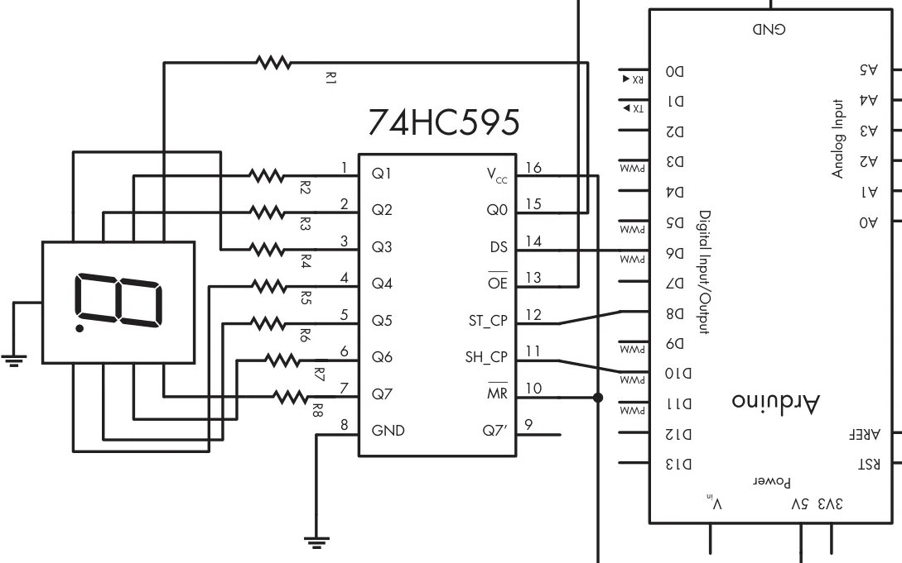
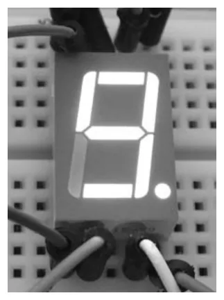

In this project we’ll assemble a circuit to use a single-digit display.
The Hardware
The following hardware is required:
- One 74HC595 shift register IC
- One common-cathode seven-segment LED display
- Eight 560 Ω resistors (R1 to R8)
- One large breadboard
- Various connecting wires
- Arduino and USB cable
The Schematic
The schematic is shown in Figure 6-13.

When wiring the LED module to the shift register, LED pins A through G connect to pins Q0 through Q6, respectively, and DP connects to Q7.
The Sketch
In the sketch for Project 18, we store the decimal values (see Table 6-2) in the int digits[] array. In the void loop, we send these values to the shift register in sequential order at ❶ and then repeat the process with the decimal point on by adding 1 to the value sent to the shift register at ❷:
// Project 18 - Creating a Single-Digit Display
#define DATA 6 // connect to pin 14 on the 74HC595
#define LATCH 8 // connect to pin 12 on the 74HC595
#define CLOCK 10 // connect to pin 11 on the 74HC595
// set up the array with the segments for 0 to 9, A to F (from Table 6-2)
int digits[] = {252, 96, 218, 242, 102, 182, 190, 224, 254, 246, 238, 62, 156,
122, 158, 142};
void setup()
{
pinMode(LATCH, OUTPUT);
pinMode(CLOCK, OUTPUT);
pinMode(DATA, OUTPUT);
}
void loop()
{
int i;
for ( i = 0 ; i < 16 ; i++ ) // display digits 0-9, A-F
{
digitalWrite(LATCH, LOW);
❶ shiftOut(DATA, CLOCK, LSBFIRST, digits[i]);
digitalWrite(LATCH, HIGH);
delay(250);
}
for ( i = 0 ; i < 16 ; i++ ) // display digits 0-9, A-F with DP
{
digitalWrite(LATCH, LOW);
❷ shiftOut(DATA, CLOCK, LSBFIRST, digits[i]+1); // +1 is to turn on the DP bit
digitalWrite(LATCH, HIGH);
delay(250);
}
}Seven-segment LCD displays are bright and easy to read. For example, Figure 6-14 shows the digit 9 with the decimal point displayed as a result of this sketch.

Displaying Double Digits
To use more than one shift register to control additional digital outputs, connect pin 9 of the 74HC595 (which receives data from the Arduino) to pin 14 of the second shift register. Once you’ve made this connection, 2 bytes of data will sent: the first to control the second shift register and the second to control the first shift register. Here’s an example:
digitalWrite(LATCH, LOW);
shiftOut(DATA, CLOCK, MSBFIRST, 254); // data for second 74HC595
shiftOut(DATA, CLOCK, MSBFIRST, 254); // data for first 74HC595
digitalWrite(LATCH, HIGH);